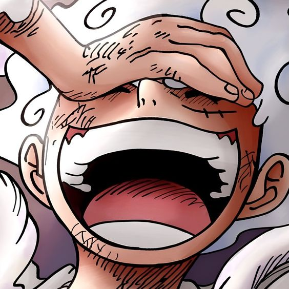

I'm gonna be the Pirate King!
Yo! I'm Luffy, the future Pirate King! I've got a crew of tough pirates who I call my nakama, and together we're gonna find the One Piece and rule the seas! So, join us on this crazy adventure and let's make some memories that'll last a lifetime! Shishishishi!
 Gear Fourth
Gear Fourth
